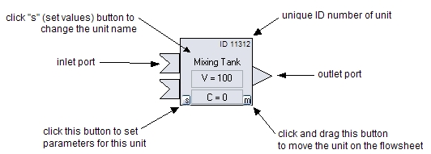

Adding Units
To add units, click the "Add Units" button so that a check mark
appears. Then click on a unit in the "Unit Palette." The cursor
will change to an arrow with a plus sign. Click the arrow where
you want to place the unit. If you want to add multiple units
with the same parameter settings, click the "s" (set parameter) button
in the lower-left corner of the unit in the unit palette, make the
settings, then place multiple copies of this unit on the flow
sheet.
Make sure all flows eventually go
into a sink. You may have two independent systems on the same flowsheet.
The unit palette is tabbed. One of the tabs is for "remote" units. This
is a distributed dynamic simulation tool in which some units can be
located on a remote computer - a "server" in this case. When you add a
remote unit to the flowsheet, you must also connect to the remote
server before initializing and running the simulation. The remote unit
on the local "client" flowsheet is a "proxy" of the actual remote unit
on the server. Messages sent to and received from the remote proxy have
been forwarded to and received from the remote unit on the server over
the Internet. These messages have been converted into XML text so that
the computer hardware and software on each end may be different - only
the format of the XML message must be known to both client and server.
Connect Units with Pipes
To connect units with pipes, click the "Add Pipes" button so that a
check mark appears. The cursor will change to an arrow with a plus
sign. Then click on an output port, release the mouse button, and then
move the mouse to drag the pipe end. Clicking on a blank area of
the flowsheet "pins" the pipe to that location. Drag the pipe end
to an input port of another unit, then click. When you click, make sure
the tip of the arrow of the cursor is inside the port and ignore the
end of the pipe. To cancel a pipe that you start drawing, click on any
output port or an input port of the same unit. Un-check the "Add
Pipes" button when you are through.
Delete Units and Pipes
To delete individual units and pipes, click the appropriate check
box. The cursor will change shape to an arrow with a minus
sign. Click on the units or pipes you want to remove.
Uncheck the box when you are through.
Move Units
See the example below for how to move units around the flowsheet and
how to set a unit's parameter values. The CSTR can be changed to
a simple mixing tank by changing the reaction rate constant value for
the reactant to zero. The PBR is currently simulated as a series
of CSTRs, with the number set by the "nodes" parameter. Increase the
number of nodes or decrease the rate coefficient if numerical
instabilities appear in the results.
Register Species
Click the Species button to set which chemical species are present.
Currently, only reactant "A" and an inert species can be added.
Run Experiment
To get ready to make a run, click the Initialize button. If you have
included remote units on the flowsheet, you must connect to the remote
server before initializing. Then start the
run by clicking the Run button. Then click the Plots tab to plot
the results.